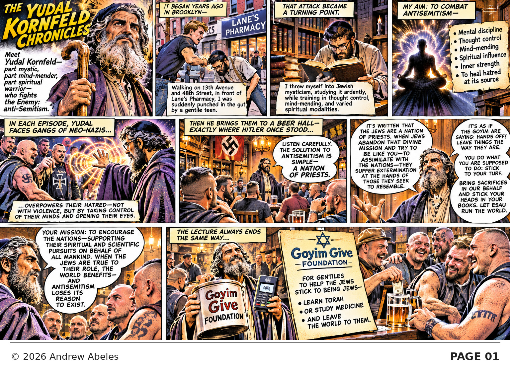
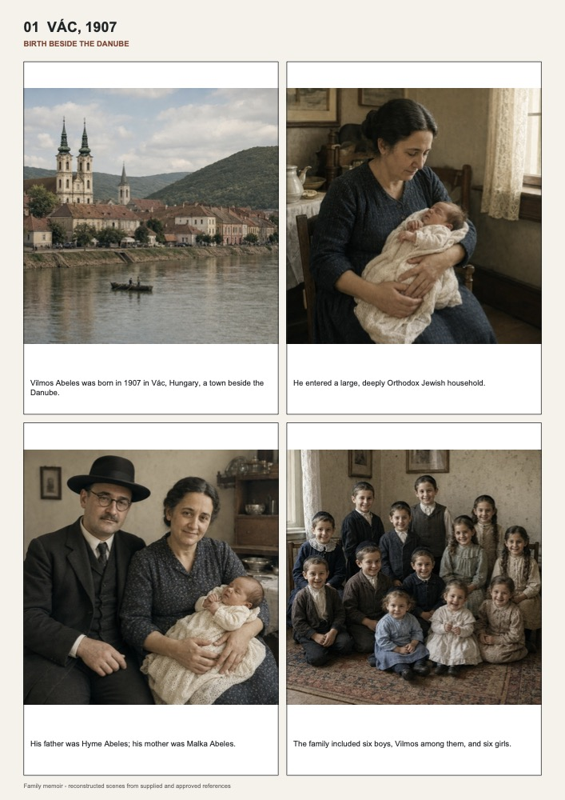

Fictional allegory
The Yudal Kornfeld Chronicles
A mystical protagonist confronts prejudice in a ten-page fictional adventure.
Read the series →Andrew Abeles presents
Lies spread fast. Make the truth impossible to ignore.
Original illustrated stories, Holocaust remembrance and pointed satire confronting antisemitic myths—one story at a time.
Start here
Meet Exposing the Lie, an illustrated time-travel series that confronts antisemitic claims through encounters with figures from history. It is a work of creative storytelling—not a substitute for primary historical sources.
Read Exposing the Lie
Explore the work
Choose a series or memoir. Historical remembrance, fictional allegory and satire are presented as different forms—not interchangeable kinds of evidence.

A mystical protagonist confronts prejudice in a ten-page fictional adventure.
Read the series →
A personal story presented through sequential illustration.
Open the story →
An illustrated reflection on the meaning and aftermath of liberation.
Open the story →
Jewish life, forced labor, survival and the work of rebuilding.
Read the memoir →
A story about compassion, survival and recovery.
View the artwork →How this work should be read
These works use different storytelling forms. Historical claims should be checked against reliable documentation; dialogue and imagined encounters in fictional comics are creative devices, not verbatim historical records. Where sourcing is incomplete, the work should not be mistaken for a scholarly reference.
Identify exactly what is being alleged, without repeating a falsehood as fact.
Use character, illustration and satire to make complex material accessible.
Distinguish sourced history from dramatization, and add references as episodes are documented.
The next chapter
I am developing video adaptations and short-form episodes to reach audiences beyond this website. That takes production time, editing, sound, distribution and collaborators.
Interested in supporting or collaborating? Contact me to discuss the work, a specific episode, or production sponsorship. No donation processing is offered on this page.